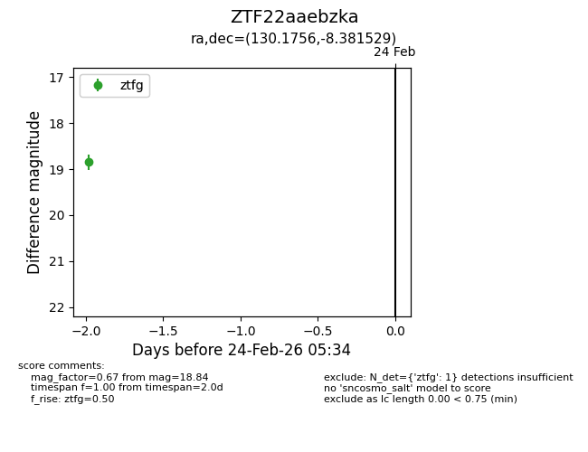
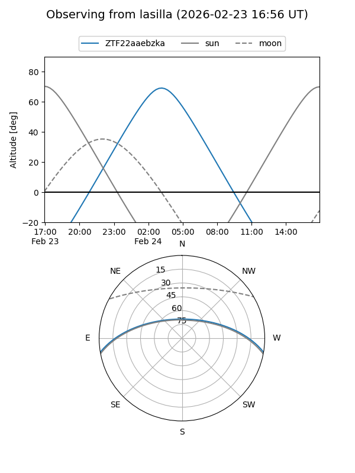
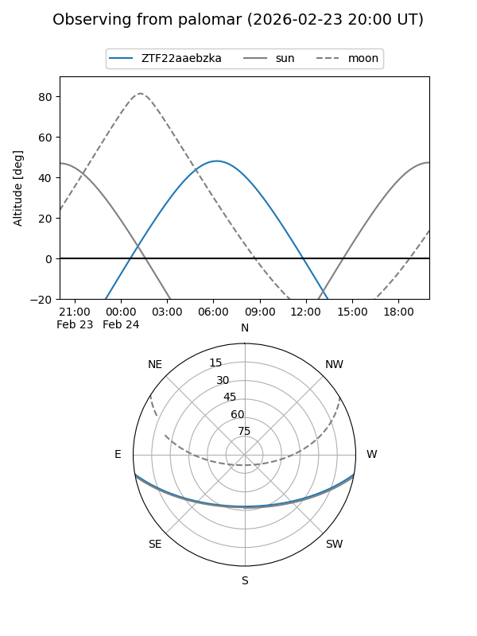

ZTF22aaebzka
Target ZTF22aaebzka at 2026-02-24 09:08
Aliases and brokers:
FINK: link
Lasair: link
ALeRCE: link
alt names
ZTF22aaebzka (ztf,fink_ztf)
Coordinates:
equatorial (ra, dec) = 130.1756,-8.38153
equatorial (HMS+DMS) = 08:40:42.15,-08:22:53.51
galactic (l, b) = (233.8938,+19.72995)
Flags:
Photometry:
last ztfg=18.84
1 ztfg detections
Lightcurve

Visibility


Additional plots